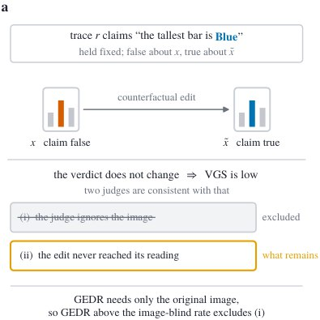

A Low Grounding Score Is Not an Ungrounded Judge: Identifying the Perceptibility Confound in Multimodal Oversight

In one sentence. Shows that counterfactual grounding probes for multimodal model judges are capped by how perceptible the image edit is, so a low score can be a false alarm, and identifies the false-alarm rate from quantities the audit already collects.
Abstract
Model judges now supervise multimodal systems at scale, filtering training data, selecting outputs, and supplying the reward that shapes multimodal reasoning models. Trusting one means first checking that it uses its evidence, and that check is itself worth scrutinizing, so we ask whether a counterfactual probe of visual grounding measures what it claims to. The probe edits the image so the ground truth flips, holds the reasoning trace fixed, and asks whether the verdict follows. We formalize it as the Verdict Grounding Score and show it cannot be read the way such scores are read. A verdict responds only to an edit that reaches the judge's decision-relevant reading, so the score is capped by how perceptible the edit is, and unless editing makes the attribute easier to read, the error is one-sided: the score can only make a judge look less grounded than it is. The practical failure is therefore a false alarm, an auditor discarding a usable overseer. Under assumptions we state, we show this missing quantity is not merely bounded but identified from three quantities the same audit protocol already collects, which makes the false-alarm rate directly measurable rather than merely a concern. Auditing nine judges, we find the predicted ordering holds strictly across our entire primary pool, and the typical judge there acts on only about half of the edits whose attribute it can otherwise resolve. Applying a conservative rejection threshold certifies several cells as false alarms outright, the clearest being a judge that detects the injected error essentially every time while still scoring as if it had not used the image at all. The rule that follows is that an image-side counterfactual score should never be reported alone: a detection probe on the unedited image upper-bounds it, certifies its false alarms, and costs nothing extra to run.
BibTeX
@article{khanbayov2026a,
title = {A Low Grounding Score Is Not an Ungrounded Judge: Identifying the Perceptibility Confound in Multimodal Oversight},
author = {Khanbayov, Rasul and Kurban, Hasan},
journal = {arXiv preprint arXiv:2610.00111},
year = {2026}
}